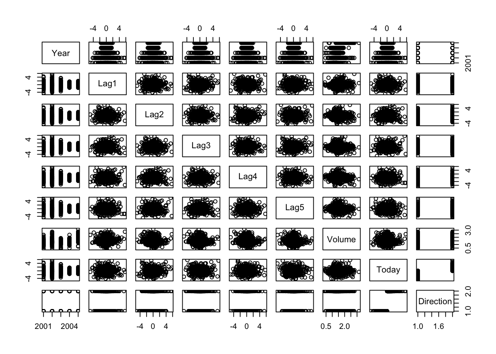
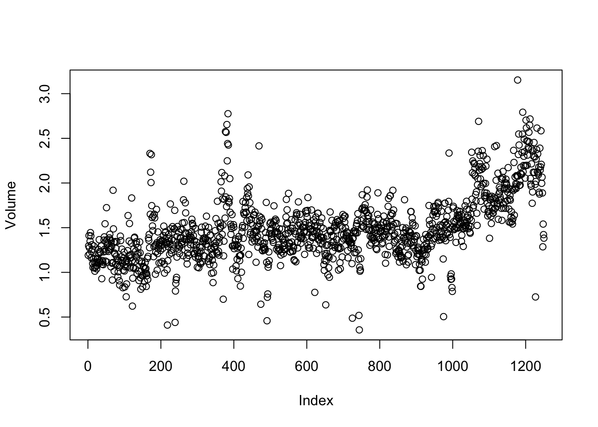
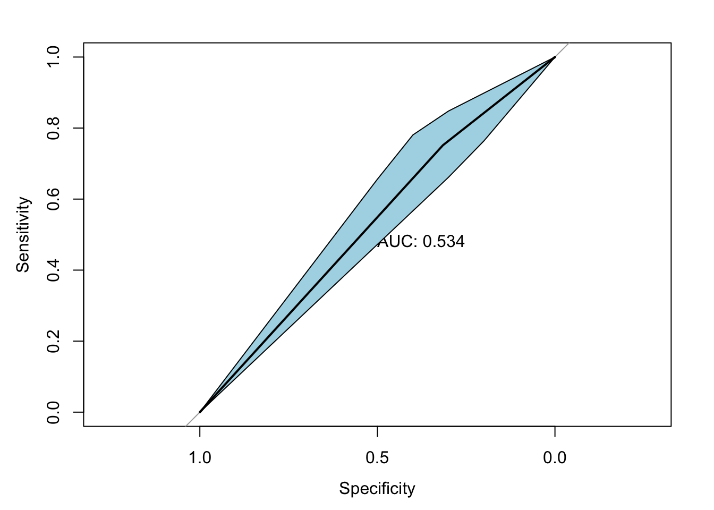
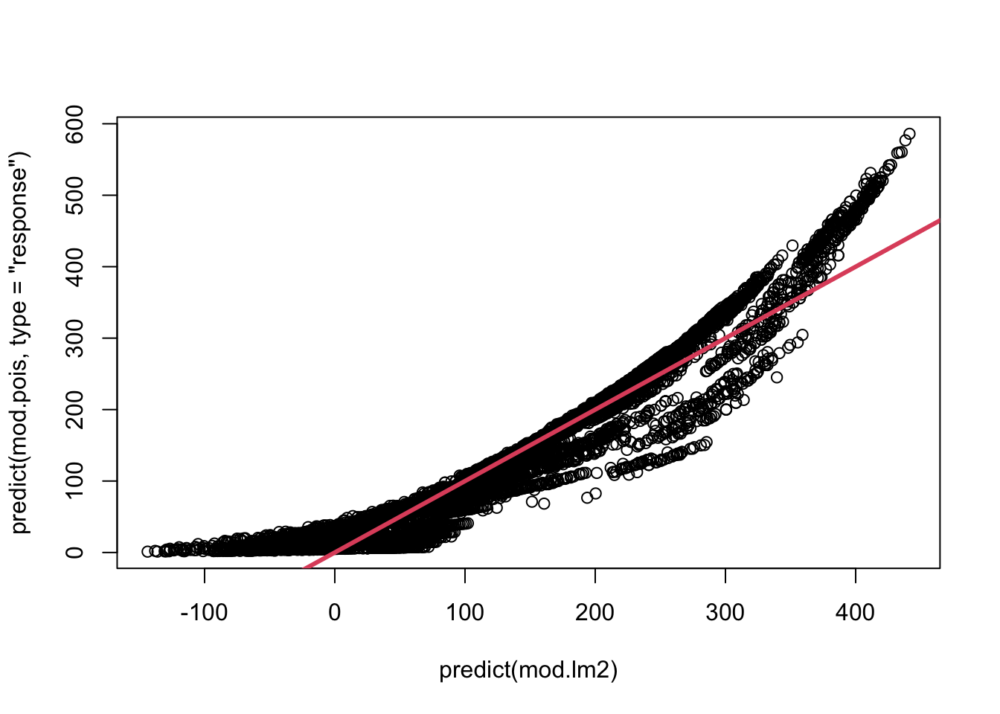

We will begin by examining some numerical and graphical summaries of the Smarket data, which is part of the ISLR2 library. This data set consists of percentage returns for the S&P 500 stock index over \(1,250\) days, from the beginning of 2001 until the end of 2005. For each date, we have recorded the percentage returns for each of the five previous trading days, lagone through lagfive. We have also recorded volume (the number of shares traded on the previous day, in billions), Today (the percentage return on the date in question) and direction (whether the market was Up or Down on this date). Our goal is to predict direction (a qualitative response) using the other features.
Year Lag1 Lag2 Lag3
Min. :2001 Min. :-4.922000 Min. :-4.922000 Min. :-4.922000
1st Qu.:2002 1st Qu.:-0.639500 1st Qu.:-0.639500 1st Qu.:-0.640000
Median :2003 Median : 0.039000 Median : 0.039000 Median : 0.038500
Mean :2003 Mean : 0.003834 Mean : 0.003919 Mean : 0.001716
3rd Qu.:2004 3rd Qu.: 0.596750 3rd Qu.: 0.596750 3rd Qu.: 0.596750
Max. :2005 Max. : 5.733000 Max. : 5.733000 Max. : 5.733000
Lag4 Lag5 Volume Today
Min. :-4.922000 Min. :-4.92200 Min. :0.3561 Min. :-4.922000
1st Qu.:-0.640000 1st Qu.:-0.64000 1st Qu.:1.2574 1st Qu.:-0.639500
Median : 0.038500 Median : 0.03850 Median :1.4229 Median : 0.038500
Mean : 0.001636 Mean : 0.00561 Mean :1.4783 Mean : 0.003138
3rd Qu.: 0.596750 3rd Qu.: 0.59700 3rd Qu.:1.6417 3rd Qu.: 0.596750
Max. : 5.733000 Max. : 5.73300 Max. :3.1525 Max. : 5.733000
Direction
Down:602
Up :648
pairs(Smarket)

The cor() function produces a matrix that contains all of the pairwise correlations among the predictors in a data set. The first command below gives an error message because the direction variable is qualitative.
As one would expect, the correlations between the lag variables and today’s returns are close to zero. In other words, there appears to be little correlation between today’s returns and previous days’ returns. The only substantial correlation is between Year and volume. By plotting the data, which is ordered chronologically, we see that volume is increasing over time. In other words, the average number of shares traded daily increased from 2001 to 2005.
attach(Smarket)plot(Volume)

Logistic Regression
Next, we will fit a logistic regression model in order to predict direction using lagone through lagfive and volume. The glm() function can be used to fit many types of generalized linear models, including logistic regression. The syntax of the glm() function is similar to that of lm(), except that we must pass in the argument family = binomial in order to tell R to run a logistic regression rather than some other type of generalized linear model.
Call:
glm(formula = Direction ~ Lag1 + Lag2 + Lag3 + Lag4 + Lag5 +
Volume, family = binomial, data = Smarket)
Coefficients:
Estimate Std. Error z value Pr(>|z|)
(Intercept) -0.126000 0.240736 -0.523 0.601
Lag1 -0.073074 0.050167 -1.457 0.145
Lag2 -0.042301 0.050086 -0.845 0.398
Lag3 0.011085 0.049939 0.222 0.824
Lag4 0.009359 0.049974 0.187 0.851
Lag5 0.010313 0.049511 0.208 0.835
Volume 0.135441 0.158360 0.855 0.392
(Dispersion parameter for binomial family taken to be 1)
Null deviance: 1731.2 on 1249 degrees of freedom
Residual deviance: 1727.6 on 1243 degrees of freedom
AIC: 1741.6
Number of Fisher Scoring iterations: 3
The smallest \(p\)-value here is associated with lagone. The negative coefficient for this predictor suggests that if the market had a positive return yesterday, then it is less likely to go up today. However, at a value of \(0.15\), the \(p\)-value is still relatively large, and so there is no clear evidence of a real association between lagone and direction.
The predict() function can be used to predict the probability that the market will go up, given values of the predictors. The type = "response" option tells R to output probabilities of the form \(P(Y=1|X)\), as opposed to other information such as the logit. If no data set is supplied to the predict() function, then the probabilities are computed for the training data that was used to fit the logistic regression model. Here we have printed only the first ten probabilities. We know that these values correspond to the probability of the market going up, rather than down, because the contrasts() function indicates that R has created a dummy variable with a 1 for Up.
glm.probs <-predict(glm.fits, type ="response")glm.probs[1:10]
In order to make a prediction as to whether the market will go up or down on a particular day, we must convert these predicted probabilities into class labels, Up or Down. The following two commands create a vector of class predictions based on whether the predicted probability of a market increase is greater than or less than \(0.5\).
The first command creates a vector of 1,250 Down elements. The second line transforms to Up all of the elements for which the predicted probability of a market increase exceeds \(0.5\). Given these predictions, the table() function can be used to produce a confusion matrix in order to determine how many observations were correctly or incorrectly classified.
table(glm.pred, Direction)
Direction
glm.pred Down Up
Down 145 141
Up 457 507
(507+145) /1250
[1] 0.5216
mean(glm.pred == Direction)
[1] 0.5216
The diagonal elements of the confusion matrix indicate correct predictions, while the off-diagonals represent incorrect predictions. Hence our model correctly predicted that the market would go up on \(507\) days and that it would go down on \(145\) days, for a total of \(507+145 = 652\) correct predictions. The mean() function can be used to compute the fraction of days for which the prediction was correct. In this case, logistic regression correctly predicted the movement of the market \(52.2\) % of the time.
At first glance, it appears that the logistic regression model is working a little better than random guessing. However, this result is misleading because we trained and tested the model on the same set of \(1,250\) observations. In other words, \(100\%-52.2\%=47.8\%\), is the training error rate. As we have seen previously, the training error rate is often overly optimistic—it tends to underestimate the test error rate. In order to better assess the accuracy of the logistic regression model in this setting, we can fit the model using part of the data, and then examine how well it predicts the held out data.
To implement this strategy, we will first create a vector corresponding to the observations from 2001 through 2004. We will then use this vector to create a held out data set of observations from 2005.
The object train is a vector of \(1{,}250\) elements, corresponding to the observations in our data set. The elements of the vector that correspond to observations that occurred before 2005 are set to TRUE, whereas those that correspond to observations in 2005 are set to FALSE. The object train is a Boolean vector, since its elements are TRUE and FALSE. Boolean vectors can be used to obtain a subset of the rows or columns of a matrix. For instance, the command Smarket[train, ] would pick out a submatrix of the stock market data set, corresponding only to the dates before 2005, since those are the ones for which the elements of train are TRUE. The ! symbol can be used to reverse all of the elements of a Boolean vector. That is, !train is a vector similar to train, except that the elements that are TRUE in train get swapped to FALSE in !train, and the elements that are FALSE in train get swapped to TRUE in !train. Therefore, Smarket[!train, ] yields a submatrix of the stock market data containing only the observations for which train is FALSE—that is, the observations with dates in 2005. The output above indicates that there are 252 such observations.
We now fit a logistic regression model using only the subset of the observations that correspond to dates before 2005, using the subset argument. We then obtain predicted probabilities of the stock market going up for each of the days in our test set—that is, for the days in 2005.
Notice that we have trained and tested our model on two completely separate data sets: training was performed using only the dates before 2005, and testing was performed using only the dates in 2005. Finally, we compute the predictions for 2005 and compare them to the actual movements of the market over that time period.
Direction.2005
glm.pred Down Up
Down 77 97
Up 34 44
mean(glm.pred == Direction.2005)
[1] 0.4801587
mean(glm.pred != Direction.2005)
[1] 0.5198413
The != notation means not equal to, and so the last command computes the test set error rate. The results are rather disappointing: the test error rate is \(52\) %, which is worse than random guessing! Of course this result is not all that surprising, given that one would not generally expect to be able to use previous days’ returns to predict future market performance. (After all, if it were possible to do so, then the authors of this book would be out striking it rich rather than writing a statistics textbook.)
We recall that the logistic regression model had very underwhelming \(p\)-values associated with all of the predictors, and that the smallest \(p\)-value, though not very small, corresponded to lagone. Perhaps by removing the variables that appear not to be helpful in predicting direction, we can obtain a more effective model. After all, using predictors that have no relationship with the response tends to cause a deterioration in the test error rate (since such predictors cause an increase in variance without a corresponding decrease in bias), and so removing such predictors may in turn yield an improvement. Below we have refit the logistic regression using just lagone and lagtwo, which seemed to have the highest predictive power in the original logistic regression model.
Direction.2005
glm.pred Down Up
Down 35 35
Up 76 106
mean(glm.pred == Direction.2005)
[1] 0.5595238
106/ (106+76)
[1] 0.5824176
Now the results appear to be a little better: \(56\%\) of the daily movements have been correctly predicted. It is worth noting that in this case, a much simpler strategy of predicting that the market will increase every day will also be correct \(56\%\) of the time! Hence, in terms of overall error rate, the logistic regression method is no better than the naive approach. However, the confusion matrix shows that on days when logistic regression predicts an increase in the market, it has a \(58\%\) accuracy rate. This suggests a possible trading strategy of buying on days when the model predicts an increasing market, and avoiding trades on days when a decrease is predicted. Of course one would need to investigate more carefully whether this small improvement was real or just due to random chance.
Suppose that we want to predict the returns associated with particular values of lagone and lagtwo. In particular, we want to predict direction on a day when lagone and lagtwo equal 1.2 and~1.1, respectively, and on a day when they equal 1.5 and $-$0.8. We do this using the predict() function.
Create a new DirectionNum column to store your variable as numeric (0/1)
Fit a linear model (Y ~ lag1 + lag2) using that new column and compare the estimates with the logistic model.
ROC curves
ROC curves are a great tool to assess our classification performance. The pROC package gives us an easy way to create one. Please make sure you have it installed!
A ROC curve plots the sensitivity and specificity of our classifier.
Remember:
sensitivity = TP / TP + FN
specificity = TN / TN + FP
#install.packages('pROC')library(pROC)
Type 'citation("pROC")' for a citation.
Attaching package: 'pROC'
The following objects are masked from 'package:stats':
cov, smooth, var
This is a more explicit way to subset, again dividing via the train object.
Smarket_train =subset(Smarket, train ) # pre 2005Smarket_test =subset(Smarket, !train ) # post 2005
For the pROC function roc() we need our data stored in numeric form, so let’s fit our model and assign new columns to our df.
glm.fits =glm(Direction ~ Lag1 + Lag2,data = Smarket_train,family =binomial(link ="logit"))glm.probs =predict(glm.fits, Smarket_test, type ="response")glm.pred <-rep(0, 252) glm.pred[glm.probs > .5] <-1# 0/1 instead of up/downSmarket_test$Preds = glm.pred# $Direction uses named factors, stored as 1/2, so we take -1 Smarket_test$DirectionNum =as.numeric(Smarket_test$Direction) -1
We create a roc_object by using the true values and predictions of our test set
This looks terrible! Both visually and performance wise. As we can see our curve is extremely close to the diagonal which indicates a completely random guess (50:50). This is in line with our previous assessment which gave us \(56\%\).
We can spice up the curve a bit by adding CIs, or add some colour, but pROC is a very base-R friendly package so feel free to shop around for some more “modern” implementations.
Warning in plot.ci.se(ci.se(roc_obj), type = "shape", col = "lightblue"): Low
definition shape.

plot(sens.ci, type="bars")
Error: object 'sens.ci' not found
Poisson Regression
Finally, we fit a Poisson regression model to the Bikeshare data set, which measures the number of bike rentals (bikers) per hour in Washington, DC. The data can be found in the ISLR2 library.
Due to space constraints, we truncate the output of summary(mod.lm). In mod.lm, the first level of hr (0) and mnth (Jan) are treated as the baseline values, and so no coefficient estimates are provided for them: implicitly, their coefficient estimates are zero, and all other levels are measured relative to these baselines. For example, the Feb coefficient of \(6.845\) signifies that, holding all other variables constant, there are on average about 7 more riders in February than in January. Similarly there are about 16.5 more riders in March than in January.
The results seen in Section 4.6.1 used a slightly different coding of the variables hr and mnth, as follows:
What is the difference between the two codings? In mod.lm2, a coefficient estimate is reported for all but the last level of hr and mnth. Importantly, in mod.lm2, the coefficient estimate for the last level of mnth is not zero: instead, it equals the negative of the sum of the coefficient estimates for all of the other levels. Similarly, in mod.lm2, the coefficient estimate for the last level of hr is the negative of the sum of the coefficient estimates for all of the other levels. This means that the coefficients of hr and mnth in mod.lm2 will always sum to zero, and can be interpreted as the difference from the mean level. For example, the coefficient for January of \(-46.087\) indicates that, holding all other variables constant, there are typically 46 fewer riders in January relative to the yearly average.
It is important to realize that the choice of coding really does not matter, provided that we interpret the model output correctly in light of the coding used. For example, we see that the predictions from the linear model are the same regardless of coding:
sum((predict(mod.lm) -predict(mod.lm2))^2)
[1] 1.573305e-18
The sum of squared differences is zero. We can also see this using the all.equal() function:
all.equal(predict(mod.lm), predict(mod.lm2))
[1] TRUE
To reproduce the left-hand side of Figure 4.13, we must first obtain the coefficient estimates associated with mnth. The coefficients for January through November can be obtained directly from the mod.lm2 object. The coefficient for December must be explicitly computed as the negative sum of all the other months.
Now, we consider instead fitting a Poisson regression model to the Bikeshare data. Very little changes, except that we now use the function glm() with the argument family = poisson to specify that we wish to fit a Poisson regression model:
We can once again use the predict() function to obtain the fitted values (predictions) from this Poisson regression model. However, we must use the argument type = "response" to specify that we want R to output \(\exp(\hat\beta_0 + \hat\beta_1 X_1 + \ldots +\hat\beta_p X_p)\) rather than \(\hat\beta_0 + \hat\beta_1 X_1 + \ldots + \hat\beta_p X_p\), which it will output by default.
plot(predict(mod.lm2), predict(mod.pois, type ="response"))abline(0, 1, col =2, lwd =3)

The predictions from the Poisson regression model are correlated with those from the linear model; however, the former are non-negative. As a result the Poisson regression predictions tend to be larger than those from the linear model for either very low or very high levels of ridership.
In this section, we used the glm() function with the argument family = poisson in order to perform Poisson regression. Earlier in this lab we used the glm() function with family = binomial to perform logistic regression. Other choices for the family argument can be used to fit other types of GLMs. For instance, family = Gamma fits a gamma regression model.